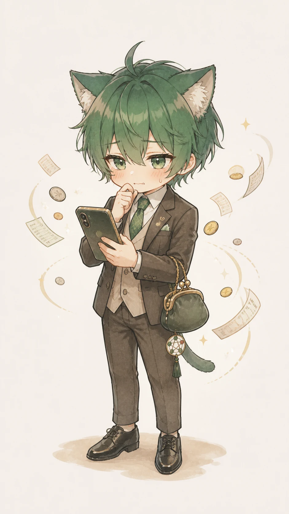
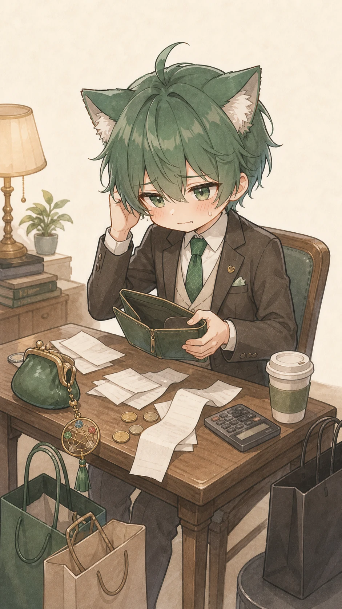
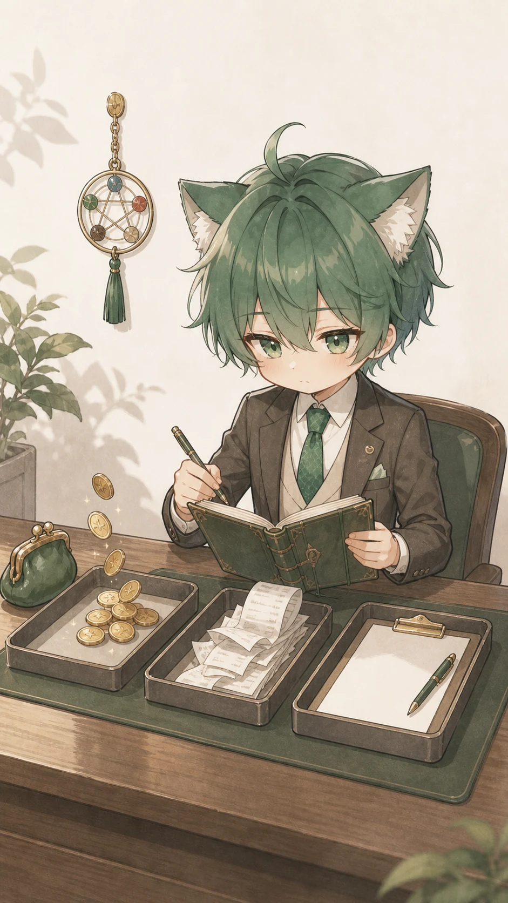
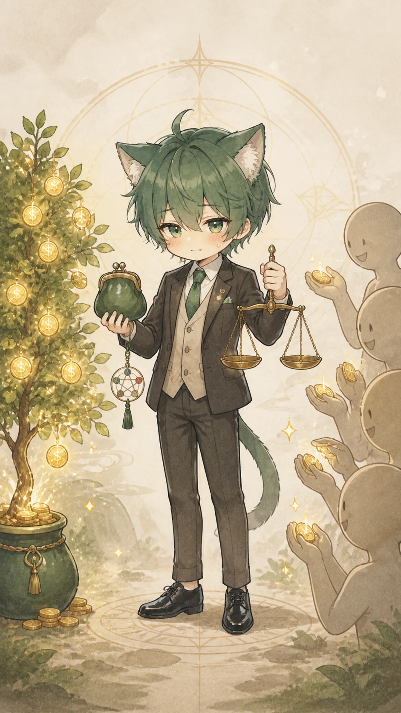
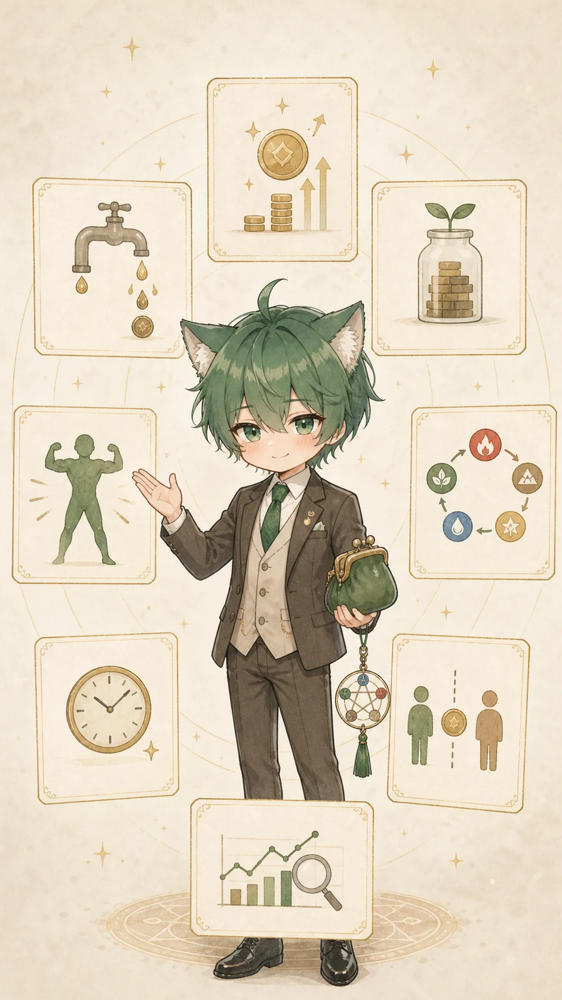
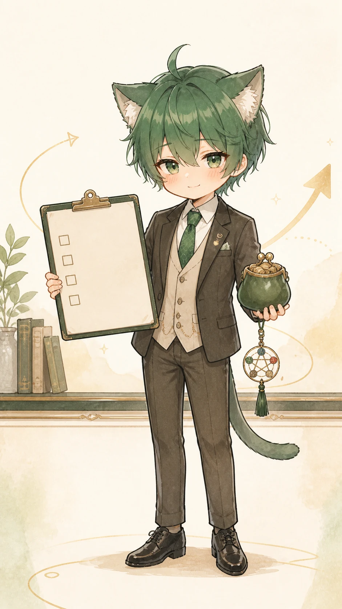

소비성향 사주풀이
나는 왜 돈이 안 모일까?
월급은 분명 들어왔는데, 통장은 벌써 로그아웃한 느낌. 이 풀이에서는 돈의 입구와 돈의 출구를 따로 봅니다.
통장 로그아웃
이번만 예산
정산 밀림

의지 탓 말고 구조부터
아낀다고 했는데 카드값이 먼저 와요
돈이 안 모이는 이유를 성격 탓으로 몰아가지는 않습니다. 약속, 구독, 기분 소비가 어떤 타이밍에 같이 열리는지부터 차분히 나눕니다.
관계 결제좋은 분위기에서 선이 흐려지는 지점
플렉스 과열속도와 감정이 결제를 밀어붙이는 지점
준비비 폭주공부와 장비가 실행보다 커지는 지점
안정 착시안전해 보여 확인을 멈추는 지점

먼저 세 칸으로 분리
돈은 한 덩어리로 보면 더 빨리 새요
오늘 볼 것은 운의 좋고 나쁨보다, 받을 돈과 줄 돈, 새로 정할 조건이 어디서 섞였는지입니다.
받을 돈수입, 입금, 고정 계약
줄 돈정산, 약속, 반복 지출
정할 조건금액, 기한, 책임 범위

재성 + 비겁
돈이 들어오는 힘과 같이 쓰는 힘을 같이 봅니다
재성은 돈을 어떻게 얻는지, 비겁은 사람·경쟁·분배 속에서 돈이 어떻게 흔들리는지 보는 힌트입니다. 둘이 엉키면 벌어도 남는 칸이 비기 쉽습니다.
수입 예측이나 투자 판단이 아니라, 소비성향과 돈 경계가 반복되는 방식을
참고용으로 정리합니다.

결제 후 열리는 지도
내 돈 흐름을 8개 관점으로 쪼개 봅니다
한 줄 판정 대신, 돈이 들어오는 방식부터 관계 정산까지 실제로 손댈 수 있는 항목으로 나눠 보여드립니다.

무료 미리보기 먼저
지금은 돈 새는 길 하나부터 확인해요
생년월일시와 현재 돈 고민을 입력하면, 무료 티저에서 강하게 보이는 소비 신호와 오늘 먼저 정리할 칸을 보여드립니다.
단정하지 않기사주는 참고용 흐름으로만 안내
숫자 만들지 않기근거 없는 수익·확률·점수 배제
행동으로 끝내기받을 돈, 줄 돈, 조건 정리로 연결
전체 리포트
9,900원